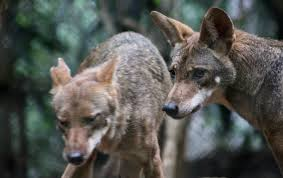
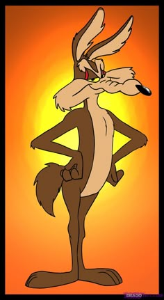
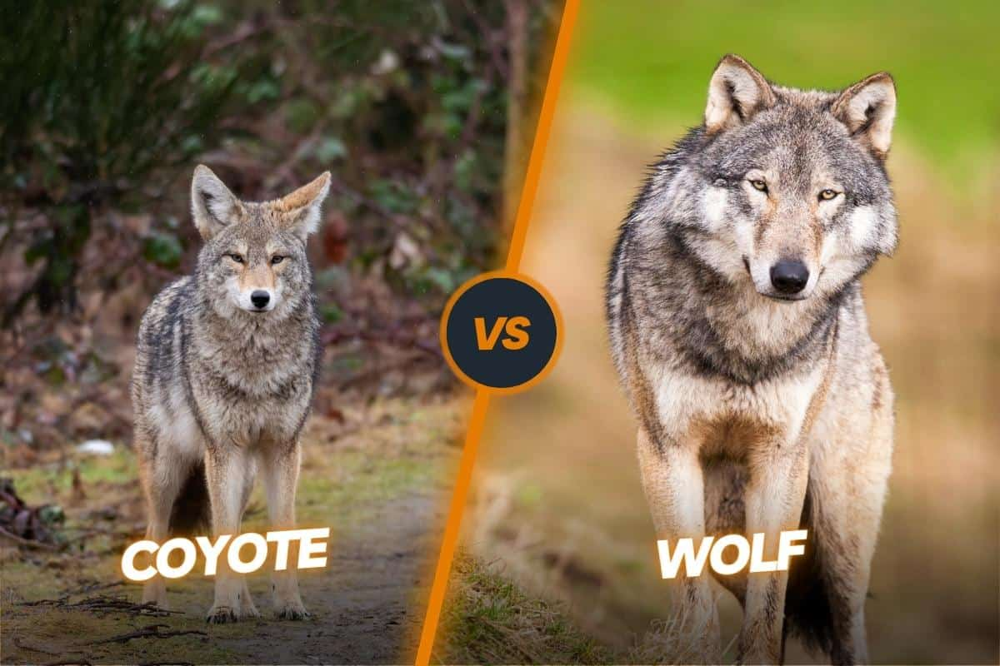

Coiote-das-planícies
Vive principalmente nas Grandes Planícies da América do Norte e possui pelagem em tons de cinza, marrom e bege.
Conheça esse animal fascinante
Inteligente, adaptável e sempre em movimento.

O animal
O coiote é um mamífero da família dos canídeos, a mesma dos lobos e dos cães. Ele vive principalmente na América do Norte e é conhecido por sua grande capacidade de adaptação, podendo ser encontrado em florestas, desertos, campos e até áreas próximas às cidades.
Esse animal é onívoro, alimentando-se de pequenos animais, frutas, insetos e outros alimentos disponíveis em seu ambiente. Os coiotes costumam viver sozinhos ou em pequenos grupos familiares e são conhecidos por sua inteligência, agilidade e habilidade para sobreviver em diferentes condições. Sua expectativa de vida na natureza geralmente varia entre 10 e 14 anos.
Variedade e habitat
Deslize os cartões para a esquerda ou para a direita para conhecer cada tipo.
Vive principalmente nas Grandes Planícies da América do Norte e possui pelagem em tons de cinza, marrom e bege.

Habita regiões áridas e possui pelagem geralmente mais clara, que ajuda na adaptação ao ambiente.

Vive no nordeste da América do Norte e pode apresentar porte maior e características influenciadas pelo cruzamento histórico com lobos.
Histórias tradicionais
Em histórias de diferentes povos indígenas da América do Norte, o coiote aparece muitas vezes como um trapaceiro inteligente e impulsivo.
Na tradição Navajo, o Coiote aparece em histórias ligadas à criação e às mudanças do mundo. Em algumas versões, suas ações impulsivas alteram a ordem planejada pelos deuses, modificando a paisagem e contribuindo para acontecimentos que transformam a vida dos seres humanos. A narrativa mostra como o caos e os erros também podem mudar o mundo.
O coiote gostava de se exibir e queria que os outros animais o vissem como alguém muito importante e poderoso. Para isso, fingia ter qualidades e habilidades que não possuía. Durante algum tempo, alguns animais acreditaram nele, mas suas mentiras acabaram sendo descobertas. A história mostra que a arrogância e a desonestidade podem causar problemas, enquanto a honestidade e a humildade são mais valiosas.
O coiote admirava a capacidade da águia de voar e acreditou que também conseguiria fazer o mesmo. Mesmo sendo avisado de que não poderia voar, insistiu em tentar e acabou caindo e se machucando. A história ensina que a arrogância e o excesso de confiança podem levar a erros, mostrando a importância da humildade e do reconhecimento dos próprios limites.
Em uma antiga lenda indígena, o Coiote observava o céu escuro e decidiu que queria enchê-lo de estrelas. Com a ajuda de outros animais, começou a espalhar pequenas luzes pelo céu de forma organizada. Porém, impaciente, pegou um saco cheio de estrelas e o lançou para o alto. Elas se espalharam por todos os lados, formando os desenhos que vemos no céu durante a noite. A história ensina que a pressa pode mudar os resultados de algo que estava sendo feito com cuidado.
Nas telas
Conheça algumas das aparições mais famosas do personagem.
Coyote é o famoso personagem da Warner Bros. que vive no deserto tentando capturar o Papa-Léguas usando planos absurdos e produtos defeituosos da marca ACME. Devido ao azar e à física dos desenhos, suas armadilhas falham repetidamente, e ele sempre acaba em situações exageradas e cômicas.
Nos anos 90, o Coiote apareceu em Tiny Toon Adventures como reitor e professor de armadilhas, servindo de mentor para o jovem Calamity Coyote.
Ele também fez aparições em Animaniacs e Duck Dodgers, além de participar dos filmes da franquia Space Jam, levando suas invenções malucas para a quadra.
Nessa história, o personagem entra em uma batalha jurídica contra a empresa ACME por causa das constantes falhas de seus produtos.
Ralph Wolf possui um visual muito parecido com o do Coiote, mas sua missão é roubar ovelhas. Em seus desenhos, ele precisa até bater cartão de ponto no trabalho.
Duas espécies
Apesar de serem parentes, eles têm diferenças importantes de tamanho, comportamento e adaptação.
O lobo é um dos maiores membros selvagens da família dos canídeos. Com corpo robusto, patas largas e mandíbula poderosa, ele possui força e resistência. Os lobos vivem frequentemente em grupos familiares organizados, chamados alcateias, o que pode ajudá-los a caçar presas grandes. Em geral, evitam o contato com seres humanos.
O coiote é menor e mais esguio, com orelhas grandes e focinho fino. Pode caçar sozinho ou em pares, alimentando-se de pequenos animais e outros alimentos disponíveis. Sua principal característica é a capacidade de adaptação: consegue viver em diferentes ambientes, inclusive em regiões próximas às cidades.